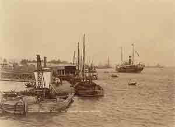
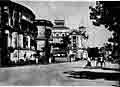
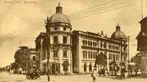
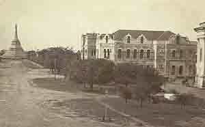
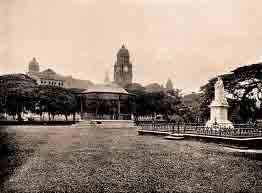
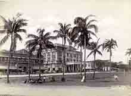
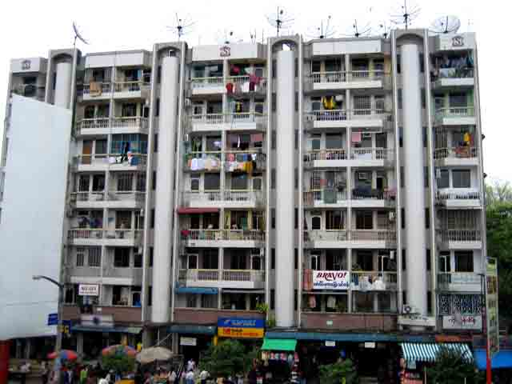
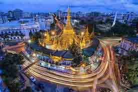

The name "Yangon" is a combination of the words yan {enemies} and koun{run out of}. It has also been translated as "the end of strife". The name Rangoon came from the British prounciation of Yangon. In the early 11th century(1028-1043CE) the Mon dominated Lower Burma. Yangon was a small Mon fishing village centred on the Shwedagon Paya, and was called Dagon. However, King Alaungpaya conquered Dagon in 1755, renamed it Yangon. The Buritish captured Yangon during the First Anglo-Burmese War of 1824-26, but it was returned to Burmese administration after the war. Then the British again seized Yangon, and all of Lower Burma in the Second Anglo- Burmese War of 1852, and eastablished Yangon as the political and commercial center of British Burma. The British laid out the new city on a grid plan constructed on a delta, with the Pazundaung Creek on the east, and the Yangon River on the west.

In 1853, the British moved the capital of Burma from Molumein(present-day Mawlamyine) to Yangon. Yangon is also the place where the british sent Bahadur Shah 2, the last Mughal emperor, to live after the India Rebellion of 1857. Based on the design by army engineer Lt. Alexander Fraser, the British constructed a new city on a grid plan on delta land, bounded to the east by the Pazundaung Creek and to the south and west by the Yangon River. Yangon become the capital of all British-ruled Burma after the British had captured Upper Burma in the Third Anglo-Burmese War of 1885. By the 1890s Yangon's increasing population and commerce gave birth to prosperous residential suburbs to the north of Royal Lake(Kandawgyi) and Inya Lake. The British also established hospitals including Rangoon General Hospital and colleges including Rangoon University.

In the 1890s, the increaring population and flourishing commerce gave rise to the affluent residential suburbs to the north of Royal Lake Kandawgyi and around Inya Lake. During the colonial period, the British also eatablished hospitals and universities, and Yangon was a mix of colonial bulidings and traditional Burmese wooden architecture, with spacious parks with lakes. It is said that by the early 20th century, the infrastructure and public services of Yangon were comparable to those of London. Yangon was known as "the garden city of the East". Before World War 2, about 55% of Yangon's population of 500,000 was Indian or South Asian, and only about a third was Bamar(Burman). Karens, the Chinese, the Anglo-Burmese and others made up the rest. After World War 1, Yangon become the epicentre of Burmese independence movement, with leftist Rangoon University students leading the way. There nationwide strikes against the British Empire in 1920, 1936 and 1938 all began in Yangon. Yangon was under Japanese occupation(1942-45), and incurred heavy damage during World War 2. The city was retaken by the Allies in May 1945 at the end of the war.

Yangon become the capital of the Union of Burma on January 4, 1948 when the country become indenpendent from the British Empire. In the 1990s as the government from the British. In the 1990s as the government began to allow private investment, and there was a construction boom with new high-rise building being constructed in the city. In 2005 the political capital of Myanmar was moved to Naypyidaw about 230 miles north of Yangon. Soon after Burma's indenpendence in 1948, many colonial names of streets and parks were changed to more nationalistic Burmese names. In 1989, the current military junta changed the city's English name to "Yangon", along with many other changes in English transliteration of Burmese names.(The changes have not been accepted by many Burmese who consider the junta unfit to make such changes, nor by many publications and news bureaus, including, most notably, the BBC and foreign nations including the United Kingdom and United States).

Since independence, Yangon has expanded outwards. Successive governments have built satellite towns such as Thaketa, North Okkalapa and South Okkalapa in the 1950s to Hlangthaya, Shwepyitha and South Dagon in the 1980s. Today, Greater Yangon encompasses an area covering nearly 600 squrae kilometres(230 sq mi). During Ne Win's isolationist rule(1962-88), Yangon's infrastructure deteriorated through poor maintenance and did not keep up with its increasing population. In the 1990s, the current military government's more open market policies attracted domestic and foreign investment, bringing a modicum of modernity to the city's infrastructure. Some inner city residents were forcibly relocated to new satellite towns. Many colonial-period buildings were demolished to make way for high-rise hotels, office buildings, and shopping malls, leading the city government to place about 200 notable colonial-period building under the Yangon City Heritage List in 1996. Major building programs have resulted in six new bridges and five new highways linking the city to its industrial back country. Still, much of Yangon remains without basic mnicipal services such as 24-hour electricity and regular garbage collection.

Yangon has become much more indigenous Burmese in its ethnic make-up since independence. After independence, many South Asians and Anglo-Burmese left. Many more South Asians were forced to leave during the 1960s by Ne Win's xenophobic government. Nevertheless, sizeable South Asian and Chinese communities still exist in Yangon. The Anglo-Burmese have effectively disappeared, having left the country or intermarried with other Burmese groups. Yangon was the centre of major anti-government protests in 1974, 1988 and 2007. The 1988 People Power uprising resulted in the deaths of hundreds, if not thousands of Burmese civilians, many in Yangon where hundreds of thousands of people flooded into the streets of the then capital city. The Saffron Revolution saw mass shootings and the use of crematoria in Yangon by the Burmese government to erase evidence of their crimes against monks, unarmed protesters, journalists and students. The city's streets saw bloodshed each time as protesters were gunned down by the government.

In May 2008, Cyclone Nargis hit Yangon. While the had few huamn casualties, three-quarters of Yangon's in dustrial infrastructure was destroyed or damaged, with losses estimated at US$800 million. In November 2005, the military government designated Naypidaw, 320 kilometres(199 mi) north of Yangon, as the new administrative capital, and subsequently moved much of the government to the newly developed city. At any rate, Yangon remains the largest city, and the most important commercial centre of Myanmar.

Yangon is a pleasant city with wide, tree-line avenues. It is the largest city in Myanmar, and is the country's spiritual, and business centre, and is where many of the country's pagodas and temples can be found. The city is a mix of diverse peoples, cultures, and religions, and is a blend of British, Burmese, Chinese and South Asian influences. The atmosphere of Yangon is that of a typical Southeast Asian city, but unlike other Asian capitals, it has not yet been overtaken by rampant development. Due to its slow growth, it still retains much of its colonial architecture, although much of it has fallen into disrepair, and is decaying due to lack of upkeep. Yangon is a unique example of a 19th-century British colonial capital where men and women still wear the traditional lon-gyi, and street vendors, and the sights and sounds evoke an Asian city of the past. It is a city with a population of over five million people, but it is developing slowly. Even though it is a busy and bustling city, it still retains some of the charm of a bygone era.